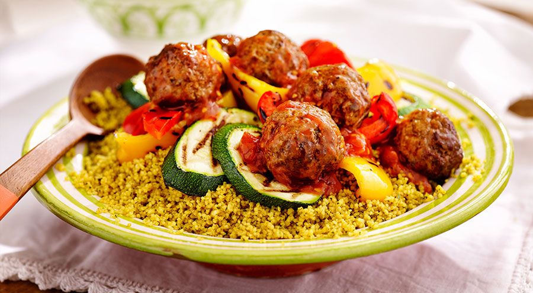

Couscous met gehakt
Ingrediënten:
- 250 gr. gehakt
- 1 grote ui
- 1 courgette
- 1 rode paprika
- 2 tomaten
- 2 eetlepels tomatenpuree (blikje of fles)
- 1 ei
- 1 theelepel cajunkruiden
- zakje couscous
- olie of boter om in te bakken
Bereiding:
Stap 1: Snij de ui in héle kleine stukjes. Voeg de ui, het ei, de kruiden en de gehakt samen en kneed het tot een geheel.
Stap 2: Van het gehaktmengsel moeten balletjes worden gemaakt en bak ze mooi bruin in de olie of boter. Gebruik hiervoor een koekenpan.
Stap 3: Snij de courgette, de paprika en tomaten in blokjes en voeg ze aan de balletjes toe.
Stap 4: Bereid de couscous volgens de gebruiksaanwijzing.
Stap 5: Serveer de balletjes erop of apart. (Eventueel aan te vullen met een groene salade)
